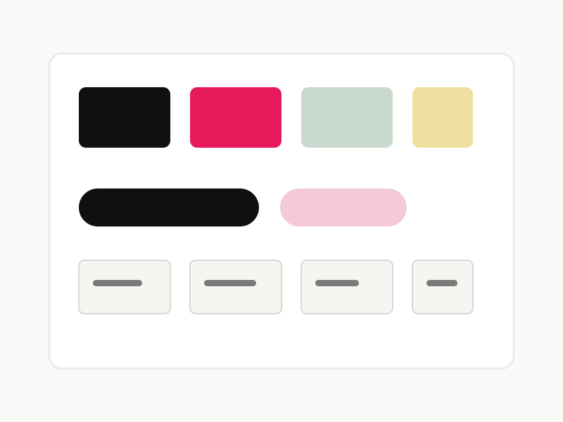

Systems / UI Foundations
Design System Refresh
A component and guidance update focused on clearer interaction states, tighter documentation, and smoother handoff with engineers.
Focus
Improving consistency at scale through reusable patterns, clearer usage guidance, and more resilient component states.